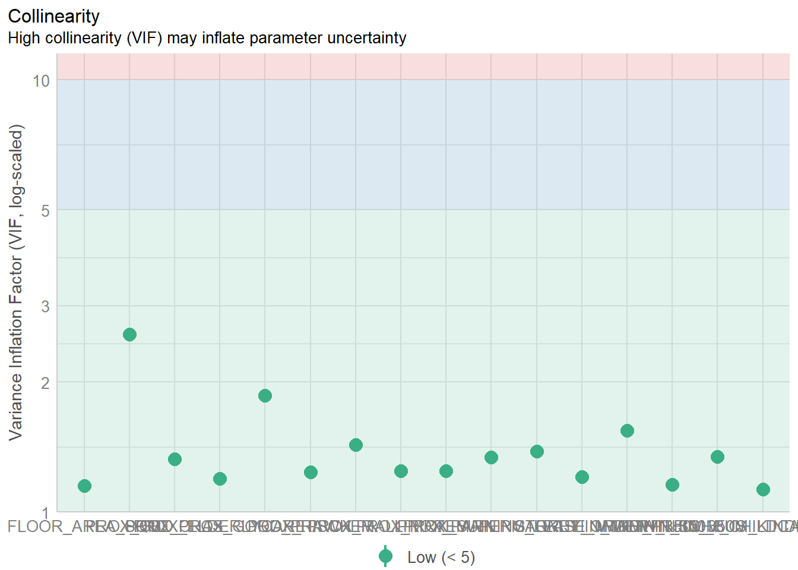
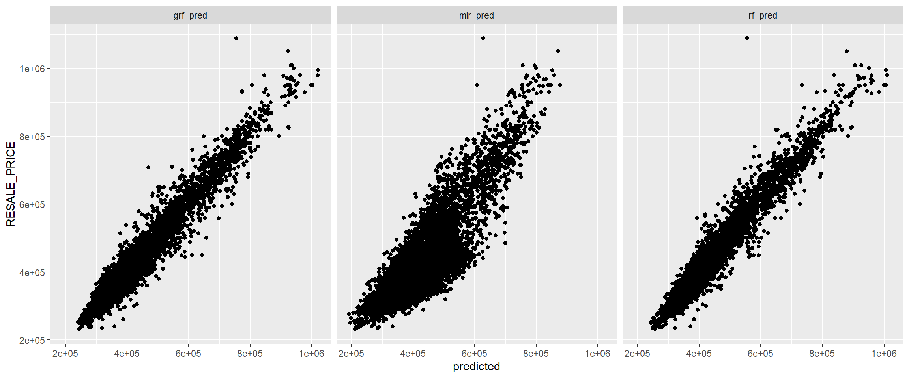

pacman::p_load(sf, spdep, GWmodel,
SpatialML, tmap,
tidymodels, tidyverse,
gtsummary,
rpart, rpart.plot,
ggstatsplot, performance)Geographically Weighted Predictive Models: Geographical Random Forest (grf) methods
Learning outcome
In this in-class exercise, you will learn how to build predictive model by using geographical random forest method. By the end of this hands-on exercise, you will acquire the skills of:
- preparing training and test data sets by using appropriate data sampling methods,
- calibrating predictive models by using both geospatial statistical learning and machine learning methods,
- comparing and selecting the best model for predicting the future outcome,
- predicting the future outcomes by using the best model calibrated.
Installing and Loading R packages
This code chunk performs 3 tasks:
- A list called packages will be created and will consists of all the R packages required to accomplish this exercise.
- Check if R packages on package have been installed in R and if not, they will be installed.
- After all the R packages have been installed, they will be loaded.
The Data
Reading data file to rds
Reading the input data sets. It is in simple feature data frame.
rs_sf <- read_rds("data/rds/HDB_resale.rds")Next, the code chunk below is used to reveal the properties of rs_sf object.
rs_sfSimple feature collection with 15901 features and 17 fields
Geometry type: POINT
Dimension: XY
Bounding box: xmin: 11597.31 ymin: 28217.39 xmax: 42623.63 ymax: 48741.06
Projected CRS: SVY21 / Singapore TM
# A tibble: 15,901 × 18
RESALE_PRICE FLOOR_AREA_SQM STOREY_ORDER REMAINING_LEASE_MTHS PROX_CBD
<dbl> <dbl> <int> <dbl> <dbl>
1 330000 92 1 684 8.82
2 360000 91 3 738 9.84
3 370000 92 1 733 9.56
4 375000 99 2 700 9.61
5 380000 92 2 715 8.35
6 380000 92 4 732 9.49
7 385000 92 3 706 8.96
8 395000 92 2 745 9.81
9 395000 93 4 731 10.3
10 395000 91 3 725 10.4
# ℹ 15,891 more rows
# ℹ 13 more variables: PROX_ELDERLYCARE <dbl>, PROX_HAWKER <dbl>,
# PROX_MRT <dbl>, PROX_PARK <dbl>, PROX_GOOD_PRISCH <dbl>, PROX_MALL <dbl>,
# PROX_CHAS <dbl>, PROX_SUPERMARKET <dbl>, WITHIN_350M_KINDERGARTEN <int>,
# WITHIN_350M_CHILDCARE <int>, WITHIN_350M_BUS <int>,
# WITHIN_1KM_PRISCH <int>, geometry <POINT [m]>Notice that it is a sf tibble data.frame. The are a total of 15901 observation and 18 columns (i.e. variables) including the geometry column.
Data Sampling
For predictive modelling, we need to have at least two sets of data, one to train the algorithm and the other one will be used for model comparison.
Split rs_sf into training and test data sets into with 50% and 50% respectively by using appropriate function of rsample package.
set.seed(1234)
resale_split <- initial_split(
rs_sf,
prop = 5/10,)
train_sf <- training(resale_split)
test_sf <- testing(resale_split)Converting from sf objects to data.frame gwModel and spatial ML libraries require the input data
train_df <- train_sf %>%
st_drop_geometry() %>%
as.data.frame()
test_df <- test_sf %>%
st_drop_geometry() %>%
as.data.frame()Saving the output files
write_rds(train_df, "data/rds/train_df.rds")
write_rds(test_df, "data/rds/test_df.rds")Retriving the Stored Data
train_df <- read_rds("data/rds/train_df.rds")
test_df <- read_rds("data/rds/test_df.rds")Computing Correlation Matrix
Before loading the predictors into a predictive model, it is always a good practice to use correlation matrix to examine if there is sign of multicolinearity.
rs_sf1 <- rs_sf %>%
st_drop_geometry()
ggcorrmat(rs_sf1[, 2:17]) 
Note
The correlation matrix above shows that all the correlation values are below 0.8. Hence, there is no sign of multicolinearity.
Building a Non-spatial Multiple Linear Regression
rs_mlr <- lm(formula = RESALE_PRICE ~
FLOOR_AREA_SQM +
STOREY_ORDER +
REMAINING_LEASE_MTHS +
PROX_CBD +
PROX_ELDERLYCARE +
PROX_HAWKER +
PROX_MRT +
PROX_PARK +
PROX_GOOD_PRISCH +
PROX_MALL +
PROX_CHAS +
PROX_SUPERMARKET +
WITHIN_350M_KINDERGARTEN +
WITHIN_350M_CHILDCARE +
WITHIN_350M_BUS +
WITHIN_1KM_PRISCH,
data=train_df)tbl_regression(rs_mlr,
intercept = TRUE) %>%
add_glance_source_note(
label = list(sigma ~ "\U03C3"),
include = c(r.squared, adj.r.squared,
AIC, statistic,
p.value, sigma))| Characteristic | Beta | 95% CI1 | p-value |
|---|---|---|---|
| (Intercept) | 105,360 | 81,898, 128,823 | <0.001 |
| FLOOR_AREA_SQM | 2,803 | 2,601, 3,005 | <0.001 |
| STOREY_ORDER | 14,044 | 13,292, 14,796 | <0.001 |
| REMAINING_LEASE_MTHS | 345 | 335, 355 | <0.001 |
| PROX_CBD | -17,918 | -18,434, -17,403 | <0.001 |
| PROX_ELDERLYCARE | -14,469 | -16,672, -12,265 | <0.001 |
| PROX_HAWKER | -17,101 | -19,961, -14,240 | <0.001 |
| PROX_MRT | -31,603 | -35,448, -27,758 | <0.001 |
| PROX_PARK | -9,334 | -12,677, -5,992 | <0.001 |
| PROX_GOOD_PRISCH | 2,787 | 2,036, 3,539 | <0.001 |
| PROX_MALL | -12,320 | -16,777, -7,863 | <0.001 |
| PROX_CHAS | -9,057 | -23,168, 5,054 | 0.2 |
| PROX_SUPERMARKET | -25,758 | -35,671, -15,845 | <0.001 |
| WITHIN_350M_KINDERGARTEN | 8,707 | 7,297, 10,117 | <0.001 |
| WITHIN_350M_CHILDCARE | -4,537 | -5,317, -3,756 | <0.001 |
| WITHIN_350M_BUS | 1,067 | 573, 1,562 | <0.001 |
| WITHIN_1KM_PRISCH | -8,192 | -9,277, -7,108 | <0.001 |
| R² = 0.742; Adjusted R² = 0.742; AIC = 197,736; Statistic = 1,428; p-value = <0.001; σ = 60,847 | |||
| 1 CI = Confidence Interval | |||
p <- performance::check_collinearity(
rs_mlr)
plot(p)
Revising mlr model
train_df <- train_df %>%
select(-c(PROX_CHAS))
train_sf <- train_sf %>%
select(-c(PROX_CHAS))
test_df <- test_df %>%
select(-c(PROX_CHAS))
test_sf <- test_sf %>%
select(-c(PROX_CHAS))write_rds(train_sf, "data/rds/train_sf.rds")
write_rds(train_df, "data/rds/train_df.rds")
write_rds(test_sf, "data/rds/test_sf.rds")
write_rds(test_df, "data/rds/test_df.rds")rs_mlr <- lm(formula = RESALE_PRICE ~
FLOOR_AREA_SQM +
STOREY_ORDER +
REMAINING_LEASE_MTHS +
PROX_CBD +
PROX_ELDERLYCARE +
PROX_HAWKER +
PROX_MRT +
PROX_PARK +
PROX_GOOD_PRISCH +
PROX_MALL +
PROX_SUPERMARKET +
WITHIN_350M_KINDERGARTEN +
WITHIN_350M_CHILDCARE +
WITHIN_350M_BUS +
WITHIN_1KM_PRISCH,
data=train_df)tbl_regression(rs_mlr,
intercept = TRUE) %>%
add_glance_source_note(
label = list(sigma ~ "\U03C3"),
include = c(r.squared, adj.r.squared,
AIC, statistic,
p.value, sigma))| Characteristic | Beta | 95% CI1 | p-value |
|---|---|---|---|
| (Intercept) | 105,081 | 81,622, 128,540 | <0.001 |
| FLOOR_AREA_SQM | 2,791 | 2,589, 2,992 | <0.001 |
| STOREY_ORDER | 14,038 | 13,286, 14,789 | <0.001 |
| REMAINING_LEASE_MTHS | 346 | 335, 356 | <0.001 |
| PROX_CBD | -17,907 | -18,422, -17,392 | <0.001 |
| PROX_ELDERLYCARE | -14,588 | -16,783, -12,392 | <0.001 |
| PROX_HAWKER | -17,434 | -20,247, -14,621 | <0.001 |
| PROX_MRT | -31,752 | -35,590, -27,914 | <0.001 |
| PROX_PARK | -9,366 | -12,708, -6,023 | <0.001 |
| PROX_GOOD_PRISCH | 2,758 | 2,008, 3,508 | <0.001 |
| PROX_MALL | -12,220 | -16,674, -7,765 | <0.001 |
| PROX_SUPERMARKET | -28,049 | -37,298, -18,800 | <0.001 |
| WITHIN_350M_KINDERGARTEN | 8,722 | 7,312, 10,131 | <0.001 |
| WITHIN_350M_CHILDCARE | -4,515 | -5,295, -3,735 | <0.001 |
| WITHIN_350M_BUS | 1,084 | 590, 1,578 | <0.001 |
| WITHIN_1KM_PRISCH | -8,201 | -9,285, -7,117 | <0.001 |
| R² = 0.742; Adjusted R² = 0.742; AIC = 197,736; Statistic = 1,523; p-value = <0.001; σ = 60,849 | |||
| 1 CI = Confidence Interval | |||
write_rds(rs_mlr,
"data/models/rs_mlr.rds" ) Converting the sf data.frame to SpatialPointDataFrame
The training data
train_sp <- as_Spatial(train_sf)
train_spclass : SpatialPointsDataFrame
features : 7950
extent : 11597.31, 42623.63, 28217.39, 48741.06 (xmin, xmax, ymin, ymax)
crs : +proj=tmerc +lat_0=1.36666666666667 +lon_0=103.833333333333 +k=1 +x_0=28001.642 +y_0=38744.572 +ellps=WGS84 +towgs84=0,0,0,0,0,0,0 +units=m +no_defs
variables : 16
names : RESALE_PRICE, FLOOR_AREA_SQM, STOREY_ORDER, REMAINING_LEASE_MTHS, PROX_CBD, PROX_ELDERLYCARE, PROX_HAWKER, PROX_MRT, PROX_PARK, PROX_GOOD_PRISCH, PROX_MALL, PROX_SUPERMARKET, WITHIN_350M_KINDERGARTEN, WITHIN_350M_CHILDCARE, WITHIN_350M_BUS, ...
min values : 218000, 74, 1, 555, 0.999393538715878, 1.98943787433087e-08, 0.0333358643817954, 0.0220407324774434, 0.0441643212802781, 0.0652540365486641, 0, 1.21715176356525e-07, 0, 0, 0, ...
max values : 1186888, 126, 17, 1164, 19.6500691667807, 3.30163731686804, 2.80329916478192, 2.13060636038504, 2.41313695915468, 10.6223726149914, 2.26056404492346, 1.57131703651196, 7, 20, 18, ... The test data
test_sp <- test_sf %>%
as_Spatial()
test_spclass : SpatialPointsDataFrame
features : 7951
extent : 11597.31, 42623.63, 28287.8, 48741.06 (xmin, xmax, ymin, ymax)
crs : +proj=tmerc +lat_0=1.36666666666667 +lon_0=103.833333333333 +k=1 +x_0=28001.642 +y_0=38744.572 +ellps=WGS84 +towgs84=0,0,0,0,0,0,0 +units=m +no_defs
variables : 16
names : RESALE_PRICE, FLOOR_AREA_SQM, STOREY_ORDER, REMAINING_LEASE_MTHS, PROX_CBD, PROX_ELDERLYCARE, PROX_HAWKER, PROX_MRT, PROX_PARK, PROX_GOOD_PRISCH, PROX_MALL, PROX_SUPERMARKET, WITHIN_350M_KINDERGARTEN, WITHIN_350M_CHILDCARE, WITHIN_350M_BUS, ...
min values : 230888, 74, 1, 546, 1.00583660772922, 3.34897933104965e-07, 0.0333358643817954, 0.0414043955932523, 0.0441643212802781, 0.0907500295577619, 0, 1.21715176356525e-07, 0, 0, 0, ...
max values : 1088000, 138, 14, 1151, 19.632402730488, 3.30163731686804, 2.86763031236184, 2.13060636038504, 2.41313695915468, 10.6169590126272, 2.27100643784442, 1.53786629004208, 7, 16, 18, ... Preparing Data for Predictive Modelling
Extracting coordinates data
The code chunk below extract the x,y coordinates of the full, training and test data sets.
coords <- st_coordinates(rs_sf)
coords_train <- st_coordinates(train_sf)
coords_test <- st_coordinates(test_sf)Before continue, we write all the output into rds for future used.
coords_train <- write_rds(coords_train, "data/models/coords_train.rds" )
coords_test <- write_rds(coords_test, "data/models/coords_test.rds" )Droping geometry field
First, we will drop geometry column of the sf data.frame by using st_drop_geometry() of sf package.
train_df <- train_sf %>%
st_drop_geometry()Calibrating Predictive Model: Recursive Partitioning method
set.seed(1234)
rs_rp <- rpart(
formula = RESALE_PRICE ~
FLOOR_AREA_SQM +
STOREY_ORDER +
REMAINING_LEASE_MTHS +
PROX_CBD +
PROX_ELDERLYCARE +
PROX_HAWKER +
PROX_MRT +
PROX_PARK +
PROX_GOOD_PRISCH +
PROX_MALL +
PROX_SUPERMARKET +
WITHIN_350M_KINDERGARTEN +
WITHIN_350M_CHILDCARE +
WITHIN_350M_BUS +
WITHIN_1KM_PRISCH,
data = train_df)
rs_rpn= 7950
node), split, n, deviance, yval
* denotes terminal node
1) root 7950 1.139546e+14 433705.6
2) PROX_CBD>=7.974483 6665 4.472144e+13 403736.0
4) REMAINING_LEASE_MTHS< 1020.5 4228 1.573100e+13 370187.4
8) PROX_GOOD_PRISCH>=3.629405 2271 3.851141e+12 340796.1 *
9) PROX_GOOD_PRISCH< 3.629405 1957 7.641480e+12 404294.6 *
5) REMAINING_LEASE_MTHS>=1020.5 2437 1.597594e+13 461940.1
10) PROX_CBD>=10.40657 2331 9.762718e+12 451754.4
20) PROX_GOOD_PRISCH>=4.866983 1123 2.801796e+12 423493.8 *
21) PROX_GOOD_PRISCH< 4.866983 1208 5.230246e+12 478026.4 *
11) PROX_CBD< 10.40657 106 6.532500e+11 685929.1 *
3) PROX_CBD< 7.974483 1285 3.219685e+13 589151.4
6) REMAINING_LEASE_MTHS< 930.5 745 6.613365e+12 486637.6
12) FLOOR_AREA_SQM< 98.5 451 2.446537e+12 442460.5 *
13) FLOOR_AREA_SQM>=98.5 294 1.936449e+12 554405.7 *
7) REMAINING_LEASE_MTHS>=930.5 540 6.952722e+12 730582.5
14) REMAINING_LEASE_MTHS< 1071.5 314 2.461969e+12 676641.3 *
15) REMAINING_LEASE_MTHS>=1071.5 226 2.307737e+12 805527.4 *rpart.plot(rs_rp)
Calibrating Random Forest Model
In this section, you will learn how to calibrate a model to predict HDB resale price by using random forest function of ranger package.
set.seed(1234)
rs_rf <- ranger(formula = RESALE_PRICE ~
FLOOR_AREA_SQM +
STOREY_ORDER +
REMAINING_LEASE_MTHS +
PROX_CBD +
PROX_ELDERLYCARE +
PROX_HAWKER +
PROX_MRT +
PROX_PARK +
PROX_GOOD_PRISCH +
PROX_MALL +
PROX_SUPERMARKET +
WITHIN_350M_KINDERGARTEN +
WITHIN_350M_CHILDCARE +
WITHIN_350M_BUS +
WITHIN_1KM_PRISCH,
data=train_df,
importance = "impurity")
rs_rfRanger result
Call:
ranger(formula = RESALE_PRICE ~ FLOOR_AREA_SQM + STOREY_ORDER + REMAINING_LEASE_MTHS + PROX_CBD + PROX_ELDERLYCARE + PROX_HAWKER + PROX_MRT + PROX_PARK + PROX_GOOD_PRISCH + PROX_MALL + PROX_SUPERMARKET + WITHIN_350M_KINDERGARTEN + WITHIN_350M_CHILDCARE + WITHIN_350M_BUS + WITHIN_1KM_PRISCH, data = train_df, importance = "impurity")
Type: Regression
Number of trees: 500
Sample size: 7950
Number of independent variables: 15
Mtry: 3
Target node size: 5
Variable importance mode: impurity
Splitrule: variance
OOB prediction error (MSE): 738005688
R squared (OOB): 0.9485198 vi <- as.data.frame(rs_rf$variable.importance)
vi$variables <- rownames(vi)
vi <- vi %>%
rename(vi = "rs_rf$variable.importance")ggplot(data = vi,
aes(x = vi,
y = reorder(variables, vi))) +
geom_bar(stat="identity")
Calibrating Geographical Random Forest Model
In this section, you will learn how to calibrate a model to predict HDB resale price by using grf() of SpatialML package.
Calibrating using training data
grf_bw_adp <- grf.bw(
formula = RESALE_PRICE ~
FLOOR_AREA_SQM +
STOREY_ORDER +
REMAINING_LEASE_MTHS +
PROX_CBD +
PROX_ELDERLYCARE +
PROX_HAWKER +
PROX_MRT +
PROX_PARK +
PROX_GOOD_PRISCH +
PROX_MALL +
PROX_SUPERMARKET +
WITHIN_350M_KINDERGARTEN +
WITHIN_350M_CHILDCARE +
WITHIN_350M_BUS +
WITHIN_1KM_PRISCH,
dataset = train_df,
kernel= "adaptive",
coords= coords_train,
bw.min = 25,
bw.max = 60,
step = 1,
nthreads = 16,
forest = FALSE,
weighted = TRUE)
Tip
The procedure above is very time consuming. It is a good practice to save the output and stop the running the code chunk in future
The code chunk below calibrate a geographic random forest model by using grf() of SpatialML package.
set.seed(1234)
rs_grf <- grf(formula = RESALE_PRICE ~
FLOOR_AREA_SQM +
STOREY_ORDER +
REMAINING_LEASE_MTHS +
PROX_CBD +
PROX_ELDERLYCARE +
PROX_HAWKER +
PROX_MRT +
PROX_PARK +
PROX_MALL +
PROX_SUPERMARKET +
WITHIN_350M_KINDERGARTEN +
WITHIN_350M_CHILDCARE +
WITHIN_350M_BUS +
WITHIN_1KM_PRISCH,
dframe=train_df,
bw=55,
kernel="adaptive",
coords=coords_train)
Tip
The procedure above is very time consuming. It is a good practice to save the output and stop the running the code chunk in future
Let’s save the model output by using the code chunk below.
write_rds(rs_grf,
"data/models/rs_grf.rds")The code chunk below can be used to retrieve the save model in future.
rs_grf <- read_rds("data/models/rs_grf.rds")Predicting by using test data
Preparing the test data
The code chunk below will be used to combine the test data with its corresponding coordinates data.
test_df <- cbind(test_sf, coords_test) %>%
st_drop_geometry()Predicting with test data
Next, predict.grf() of spatialML package will be used to predict the resale value by using the test data and gwRF_adaptive model calibrated earlier.
grf_pred <- predict.grf(rs_grf,
test_df,
x.var.name="X",
y.var.name="Y",
local.w=1,
global.w=0)
Tip
The procedure above is very time consuming. It is a good practice to save the output and stop the running the code chunk in future
Before moving on, let us save the output into rds file for future use.
grf_pred <- write_rds(grf_pred,
"data/models/grf_pred.rds")Saving predicted output of geographic random forest and preparing final data table
The output of the predict.grf() is a vector of predicted values. It is wiser to convert it into a data frame for further visualisation and analysis.
grf_pred <- read_rds("data/models/grf_pred.rds")
grf_pred_df <- as.data.frame(grf_pred)In the code chunk below, cbind() is used to append the predicted values onto test_df the
test_pred <- test_df %>%
select(RESALE_PRICE) %>%
cbind(grf_pred_df)Saving predicted output of random forest and preparing final data table
rf_pred <- predict(rs_rf, test_df)rf_pred_df <- as.data.frame(rf_pred$predictions) %>%
rename(rf_pred = "rf_pred$predictions")test_pred <- cbind(test_pred,
rf_pred_df)Saving predicted output of multiple linear regression and preparing final data table
mlr_pred <- predict(rs_mlr, test_df)mlr_pred_df <- as.data.frame(mlr_pred) %>%
rename(mlr_pred = "mlr_pred")test_pred <- cbind(test_pred,
mlr_pred_df)write_rds(test_pred,
"data/models/test_pred.rds")Model Comparison
The root mean square error (RMSE) allows us to measure how far predicted values are from observed values in a regression analysis. In the code chunk below, rmse() of Metrics package is used to compute the RMSE.
yardstick::rmse(test_pred,
RESALE_PRICE,
grf_pred)# A tibble: 1 × 3
.metric .estimator .estimate
<chr> <chr> <dbl>
1 rmse standard 28745.yardstick::rmse(test_pred,
RESALE_PRICE,
rf_pred)# A tibble: 1 × 3
.metric .estimator .estimate
<chr> <chr> <dbl>
1 rmse standard 28970.yardstick::rmse(test_pred,
RESALE_PRICE,
mlr_pred)# A tibble: 1 × 3
.metric .estimator .estimate
<chr> <chr> <dbl>
1 rmse standard 61617.mc <- test_pred %>%
pivot_longer(cols = c(2:4),
names_to = "models",
values_to = "predicted")mc %>%
group_by(models) %>%
yardstick::rmse(RESALE_PRICE,
predicted)# A tibble: 3 × 4
models .metric .estimator .estimate
<chr> <chr> <chr> <dbl>
1 grf_pred rmse standard 28745.
2 mlr_pred rmse standard 61617.
3 rf_pred rmse standard 28970.Visualising the predicted values
Alternatively, scatterplot can be used to visualise the actual resale price and the predicted resale price by using the code chunk below.
ggplot(data = test_pred,
aes(x = grf_pred,
y = RESALE_PRICE)) +
geom_point()
Note
A better predictive model should have the scatter point close to the diagonal line. The scatter plot can be also used to detect if any outliers in the model.
In the code chunk below, facet_grid() of ggplot package is used to display the scatterplots next to each other.
ggplot(data = mc,
aes(x = predicted,
y = RESALE_PRICE)) +
geom_point() +
facet_grid(. ~ models)